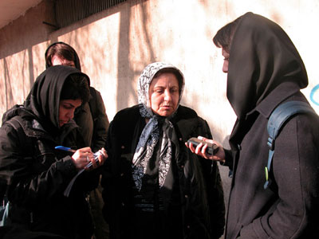

|
|

شيرين عبادي :دولت ايران بايد طبق قطعنامه اخير مجمع عمومي سازمان ملل فعالان حقوق زنان را آزاد کند
جلوه جواهري و مريم حسين خواه همچنان در بازداشتند
يكشنبه2 دی 1386
تغيير براي برابري: صبح امروز اول دي ماه 1386شيرين عبادي وكيل جلوه جواهري و مريم حسين خواه، اين دو روزنامه نگار و وب نگار و فعال كمپين يك ميليون امضا و خانواده هايشان به شعبه امنيت دادگاه انقلاب مراجعه کردند اما موفق به ديدار بازپرس پرونده نشدند.
عبادي در خصوص تبديل قرار وثيقه و يا بازداشت جلوه جواهري و مريم حسين خواه به قرار کفالت اظهار بي اطلاعي کرد و گفت: " امروز به دادياري شعبه يك ويژه امنيت مراجعه كردم تا در خصوص قرارهاي وثيقه ي سنگيني كه براي موكلينم صادر شده است مذاكره نموده و اعلام كنم كه قرارهاي صادرشده براي اين دو فعال حقوق زنان بسيار سنگين است اما بازپرس ويژه امنيت حضور نداشتند"
عبادي مي افزايد:" به رغم وعده هايي كه براي پيگيري وضعيت بازداشت جلوه جواهري و مريم حسين خواه داده شده بود هنوز هيچ اقدامي انجام نشده است. صرف نظر از اينكه آنها جرمي مرتکب نشده اند، بر فرض اينكه جرمي هم متوجه ايشان باشد اين ميزان قرار بسيار سنگين است. دختري كه تنها اعتراضش اين است كه نمي خواهد سرش هوو بيايد و دانشجويي كه تنها حرفش اين است كه او نيز يك انسان است و بايد از حقوق انساني خودش برخوردار باشد نبايد اينچنين مورد اذيت و آزار قرار بگيرد."
عبادي درادامه اظهار اميدواري كرد كه دادگاه انقلاب حداقل بر اساس خواسته مجمع عمومي سازمان ملل متحد عمل کند كه به دولت ايران توصيه كرده است به دستگيري زنان خاتمه دهد و آنان را آزاد نمايد. او گفت:"من جز برائت و آزادي موكلين خود به چيز ديگري نمي انديشم. من تكرار مي كنم موكلينم مرتكب جرمي نشدند كه بخواهند بازداشت وسپس مجاكمه شوند. بنابر اين صرف نظر از اينكه برخورد قضات و كاركنان خوب بوده اما من به اصل موضوع اعتراض دارم . زيرا اين ها بيگناهند"
عبادي درخصوص دليل طولاني شدن روند دادرسي اين پرونده و آينده ي آن به تغيير براي برابري گفت:"اين كه قاضي چه رآي دهد خودش بايد پاسخگو باشد و من براي آينده ي اين پرونده هيچ پيش بيني جز آزادي مطلق ندارم . چرا كه موكلين من هيچ گناهي مرتكب نشده اند . دولت ايران طبق قطعنامه اي كه اخيرا در مجمع عمومي سازمان ملل متحد صادر شده است به علت نقض حقوق بشر محكوم شده است. نحوه ي رفتار با فعالان و مدافعان حقوق زنان به دولت ايران توصيه شده است كه اين افراد را به سرعت آزاد كنند و من اميدوارم مقامات قضايي و امنيتي به توصيه هاي سازمان ملل توجه كنند. "
در مراجعه امروز خانواده ها، آنها همچنين مطلع شدند كه دادگاه مربوط به پروندهي 13 اسفند جلوه جواهري بدون اطلاع قبلي به وكيل پرونده و بدون حضور وي تشكيل شده است.
به رغم اظهارات مسئولين جهت پيگيري وضعيت بازداشت اين دو فعال حقوق زنان صبح امروز جلوه جواهري كه ملبس به لباس زندانيان بند زنان به دادگاه آورده شده بود در شعبه ي 13 دادگاه انقلاب و در ارتباط با پرونده ي 13 اسفند خود محاكمه شد.

شيرين عبادي وكيل اين دو فعال حقوق زنان تنها كسي بود كه توانست با قاضي شعبه 13 ملاقات نمايد. عبادي در همين رابطه به تغيير براي برابري گفت: "امروز جلوه جواهري در شعبه ي سيزدهم دادگاه انقلاب محاكمه شد . تاريخ اين محاكمه به وكلاي وي ابلاغ نشده بود و من نيز بر حسب اتفاق در راهرو موكلم را ديدم. "
وي ادامه داد:"رييس دادگاه شعبه 13 آقاي سادات بودند و آقاي سبحاني نماينده دادستان امروز نيامده بودند. قاضي پرونده با درخواست مطالعه پرونده موافقت نموده است. بر همين اساس طي چند روز آينده لايحه دفاعيه اي را تسليم مي كنيم. روحيه جلوه هم خيلي خوب بود. به همان سرزندگي و شادابي و مقاوم بودن هميشگي بود. من تحسين مي كنم دختران جواني كه علي رغم تمام مشكلاتي كه برايشان پيش مي آيد بر حقوق انساني خود همچنان پافشاري مي كنند. "
لازم به ذکر است يك شنبه ي هفته ي گذشته 25 آذرماه نيز در پي مراجعه خانواده و وكلاي جلوه جواهري و مريم حسين خواه به دادگاه انقلاب قاضي سبحاني داديار پرونده به ايشان اعلام شد كه با كاهش قرار وثيقه به كفالت موافقت نشده است. و تنها در مورد مريم حسين خواه قاضي سبحاني پذيرفته بود كه ميزان وثيقه را كاهش دهد.
همچنين به رغم آن كه زمان دادگاه پرونده هاي جلوه و مريم در ارتباط با 13 اسفند، به ترتيب 27 و 28 آذرماه تعيين شده بود دادگاه ايشان تشكيل نشد . كاوه مظفري همسر جلوه جواهري در همين خصوص به نقل از قاضي گفته بود هر زمان وثيقه هاي اين دو نفر آماده و به دادگاه ارائه گردد آزاد خواهند شد اما مسأله اين است كه پرداخت چنين وثيقه اي در توان اين دو و خانواده هاي ايشان نبوده و همچنان خواهان تغيير قرار وثيقه به قرار كفالت مي باشند.
تغییر برای برابری: صبح روز شنبه 24 آذر برخی از اعضای کمیته مادران کمپین به دفتر معاونت قوه قضائیه مراجعه کردند و موفق به دیدار با آقای جمشیدی معاونت قوه قضائیه شدند و نامه ای را در خصوص بازداشت مریم حسین خواه و جلوه جواهری به ایشان ارائه دادند. آقای جمشیدی نیز در پایان این ملاقات به آنان گفت که پیگیر وضعیت بازداشت این دو فعال کمپین خواهد بود.
یکشنبه 25 اذر ماه نیز علاوه بر مادران، وکلای جلوه و مریم به دادگاه انقلاب رفتند. مادر جلوه و مریم موفق به دیدار قاضی سبحانی دادیار پرونده شدند. آنها پس از دیدار با قاضی پرونده ابراز داشتند که قاضی پرونده همچنان بر قرار وثیقه اصرار دارند و همچنان با تبدیل قرار وثیقه به کفالت موافقت نکرده اند البته در مورد مریم حسین خواه قاضی سبحانی پذیرفته بود که میزان وثیقه را کاهش دهد. برای مریم حسین خواه وثیقه 100 میلیون تومانی و برای جلوه جواهری وثیقه 50 میلیون تومانی صادر شده است که هردوی آنها اعتراض کرده و مادرانشان نیز به قاضی گفته اند که امکان پرداخت چنین وثیقه ای را ندارند و مادر مریم نیز گفته که جز خدا کسی را ندارد. خواسته ی هردو این خانواده ها تبدیل قرار وثیقه به کفالت است.
لازم به ذکر است که جلوه جواهری و مریم حسین خواه جزو 33 نفری بودند که روز 13اسفند جلوی دادگاه انقلاب به خاطر حمایت از دوستان شان بازداشت شده بودن. دادگاه این دو فعال جنبش زنان سه شنبه و چهارشنبه 27 و 28 آذر ماه است. امروز وکلای پرونده آنها به شعبه 13 دادگاه اعلام کردند که موکلانشان در زندان هستند تا دادگاه آنها را برای شرکت در دادگاه به زندان بخواند. دادگاه جلوه جواهری روز 27 آذر و دادگاه مریم حسین خواه 28 اذر ماه است .
نامه مادران کمپین یک میلیون امضا به معاونت قوه قضائیه
معاونت محترم قوه قضائیه، جناب آقای جمشیدی
با سلام و تقدیم احترام؛
ما گروهی از مادران که در کمپین جمع آوری یک میلیون امضاء برای تغییر قوانین تبعیض آمیز در کنار فرزندان مان برای ارتقاء فرهنگ عمومی و تغییر قوانین تبعیض آمیز به تلاشی مدنی و مسالمت آمیز مشغول هستیم، متاسفانه، هر روز شاهد یک نوع بی عدالتی برای دختران و پسران برابری خواه خود هستیم که آخرین نمونه آن بازداشت جلوه جواهری است. این زن جوان، دانشجوی فوق لیسانس رشته جامعه شناسی است که به تازگی تشکیل خانواده داده و با دنیایی از امید و آرزو برای زندگی عادلانه و توسعه کشورش، تلاش می کند. اما او را به جرم نوشتن درباره حقوق زنان به نشر اکاذیب و تبلیغ علیه نظام متهم کرده و بیش از دو هفته است که به بخش عمومی زندان اوین منتقل کرده اند. از سوی دیگر مریم حسین خواه نزدیک به یک ماه است در بازداشت بسر می برد (و ما در نامه ای دیگر و در ملاقات حضوری، شرح دستگیری او را به اطلاع جنابعالی رسانده ایم).
جلوه جواهری در یکی از مقالات خود که در مورد «لایحه حمایت از خانواده» به نگارش درآورده به عنوان یک شهروند ایرانی خواهان اصلاح لایحه ای شده که حتا خود جنابعالی اخیراً اظهار امیدواری کرده اید که بند 23 این لایحه تغییر کند. جلوه جواهری در مطلب خود می نویسد: «كنار هم بايستيم، از هر مسلك و جناح؛ اگر كه نماينده مجلس هستيم، اگر عضو کميسيون زنان قوه قضائيه هستيم، اگر فعال حقوق زنان هستيم، يا حتي رهگذري؛ چراكه مي دانيم تصويب اين لايحه چگونه مي تواند زندگي و امنيت خاطر ميليونها خانواده هموطن مان را به چالش بگيرد. بياييم دست به دست هم دهيم و در فضاي خردمندانه و آرام، به اصلاح اين لايحه و قوانين مربوط به خانواده همت گماريم، تا زندگي خود و ميليون ها زن را از موهبت قانوني عادلانه بهره مند سازيم».
جناب آقای جمشیدی حال به نظر شما نوشته این زن جوان، مصداق تبلیغ علیه نظام است. او که خردمندانه و از سر دلسوزی برای اصلاح قوانین در چهارچوب های قانونی حرکت می کند و به آینده «دختران شما» می اندیشد، چطور باید به خاطر نوشتن و گفتن از قوانینی به زندان بیافتد که خود جنابعالی و دیگر مسئولان و نیز مراجعی همچون آیت الله صانعی نیز در نقد و اصلاح آن سخن می گویند و می نویسند؟
جلوه جواهری، دو برادر خود را در جبهه های جنگ از دست داده و امروز مادر جلوه و ما مادران دیگر او، می بینیم که پسران مان به خاطر دفاع از کشور کشته شده اند و حال نیز دختران مان به جرمی ناکرده در گوشه زندان افتاده اند. به راستی این عدالت است؟
جناب آقای جمشیدی، ما مادریم و این دختران جوان را طوری بزرگ کرده ایم که نسبت به سرنوشت کشورشان حساس باشند و حال از شما می پرسیم آیا وجدان مسئولان کشور اجازه می دهد که دختران و پسران جوانی همچون جلوه جواهری و مریم حسین خواه که تنها به فکر زندگی شخصی خود نیستند و نسبت به رنج هم جنسان و هموطنان شان احساس مسئولیت می کنند، باید جوانی شان را در زندان ها بگذارنند؟
از این رو، از آن مقام محترم که همواره از حقوق مدنی مردم دفاع نموده اید تقاضا داریم که برای تبدیل قرار بازداشت جلوه جواهری و نیز مریم حسین خواه به قرار کفالت تلاش کرده و کفالت ما مادران را برای فرزندان مان، جلوه جواهری و مریم حسین خواه بپذیرید و مقدمات آزادی آنها را هرچه سریعتر فراهم آورد.
کمیته مادران کمپین جمع آوری یک میلیون امضاء
قاضي پرونده: صبر كنيد تا تحقيقات تكميل شود
تغییر برای برابری : گوهر بيات، مادر جلوه جواهري، امروز توانست با قاضي دادگاه انقلاب ديدار و در مورد پرونده دخترش با وي صحبت كند.
پيش از اين قرار وثيقه 50ميليون توماني براي جلوه جواهري صادر شده بود در حالي كه امروز، قاضي دادگاه به خانواده وی گفته است:« تا زماني كه تحقيقات تكميل شود بايد صبر كنيد.» این پاسخی است که به خانواده مریم حسین خواه نیز داده شد و مادر او نیز بی جواب بازگشت.
دوشنبه هفته گذشته نيز مادر جلوه براي پيگيري وضعيت دخترش به دادگاه انقلاب مراجعه كرده بود اما قاضي پرونده حاضر به پذيرش وي نشد و به مادرش گفته شد برويد اوين و از خود جلوه سوال کنيد.
جلوه جواهري كه روز شنيه 10آذرماه پس از بازجويي در دادگاه انقلاب، بازداشت و به زندان اوين منتقل شده است، قرار است روز 27 آذر ماه در رابطه به پرونده 13 اسفند خود محاکمه شود.
وکیل جلوه جواهری : برای ملاقات با موکلم به موافقت کتبی معاونت امنیت دادسرای انقلاب نیاز دارم
تغییر برای برابری : زهره ارزنی وکیل جلوه جواهری فعال جنبش زنان و عضو فعال کمپین یک میلیون امضا در خصوص آخرین وضعیت موکل خود اظهار داشت که وی فعلا در بند 3 عمومی زنان زندان اوین به سر می برد. وی گفت روز شنبه جهت ملاقات با موکل خود به زندان اوین مراجعه کردم اما موفق به ملاقات با او نشدم. وی گفت یکی از مسئولین زندان اعلام کرده که برای ملاقات با موکلش لازم است از معاونت امنیت دادسرای انقلاب موافقتنامه ی کتبی ارائه نماید.
ارزنی درخصوص موارد اتهامی این عضو کمپین یک میلیون امضاء اظهار داشت ایشان طی تماس تلفنی صبح روز چهار شنبه چهاردهم آذرماه اتهام خود را تبلیغ علیه نظام و تشویش اذهان عمومی و نشر اکاذیب عنوان کرده است.
ارزنی ادامه داد که در روزهای آینده به دادسرای انقلاب اسلامی مراجعه می کند و بر مبنای اعلام وکالت خود در پرونده ی موکلش جلوه جواهری درخواست ملاقات را به مقامات دادسرا ارائه خواهد نمود.
مادر جلوه جواهري:تنها کار جلوه، تلاش براي بهبود زندگي زناني مثل من و خودش بوده است.
روز دوشنبه 12 آذر ماه ، جمعي از فعالان کمپين و اعضاي کميته مادران با گوهر بيات ، مادر جلوه جواهري و همسر او کاوه مظفري ديداري داشتند ، که گزارشي از آن را کانون زنان ايراني منتشر کرده است در ادامه اين ديدار گفتگويي با مادر جلوه داشته ايم که مي خوانيد.
خانم بيات، از وضعيت جلوه چه اطلاعي داريد؟ تا کنون چه پيگيري هايي انجام داده ايد؟
اطلاع خيلي کمي دارم. واقعاً نمي فهمم که به چه دليلي بازداشت شده است. من تا ديروز سفر بودم و امروز رفتم دادگاه تا از قاضي بپرسم که وضعيت جلوه چگونه است، اما جواب مشخصي به من ندادند. نتوانستم با قاضي صحبت کنم. فقط گفتند که برويد اوين و از خود جلوه سوال کنيد.
آيا پس از بازداشت جلوه، با او صحبت کرده ايد؟
يکبار خيلي کوتاه تماس گرفت و در حد احوالپرسي صحبت کرديم. گفت که يک دقيقه بيشتر وقت ندارد، اما اگر بشود فردا براي ملاقات مي روم.
فعاليت هاي جلوه در چه حوزه اي است ؟و فکر مي کنيد چرا او بازداشت شده است؟
بيشترين کاري که جلوه مي کند براي برابري حقوق زن و مرد است. همه تلاشش را مي کند که قوانين تبعيض آميز تغيير کند. مثلاً درباره همين لايحه جديد که مي خواهند تعدد زوجات را قانوني کنند، خيلي اعتراض داشت و فعاليت مي کرد. من واقعاً نمي دانم چرا کسي را که کاملاً آرام براي مردم، بويژه زنان فعاليت مي کند بازداشت مي کنند. من هم مثل جلوه معتقدم که وضع زنان در جامعه ما خوب نيست. زنان دو برابر مردان هم در خانه و هم در محيط کار فعاليت مي کنند، اما قوانين براي آنها خوب نيست.
در آخرشما به عنوان مادر او چه خواسته اي داريد؟
فقط از مقامات و مسئولان مي خواهم که عادلانه برخورد کنند. جلوه هيچ فعاليت غير قانوني انجان نداده است. تنها کاري که کرده، تلاش براي بهبود زندگي زناني مثل من و خودش بوده است.
با تشکراز وقتي که در اختيار ما گذاشتيد.
شنبه 10 آذر 86
تغییر برای برابری: جلوه جواهري، عضو «کمپين يک ميليون امضاء» و از نويسندگان وب سايت «تغيير براي برابري»، ظهر امروز، شنبه دهم آذرماه 1386 در دادگاه انقلاب بازداشت شد.
این فعال جنبش زنان، صبح روز شنبه در پي احضار کتبي به دادگاه انقلاب مراجعه کرده و پس از چند ساعت بازجويي در دادسرای ویژه امنیت، به اتهام تشویش اذهان عمومی، تبلیغ علیه نظام، نشر اکاذیب از طریق انتشار اخبار کذب در سایت «تغییر برای برابری» بازداشت و به زندان اوین منتقل شد.
جلوه جواهري که دانشجوی کارشناسی ارشد رشته جامعه شناسی است، سال هاست در انجمنهاي زنان فعاليت ميكند و ترجمه ها، مقالات خود را از منظر جامعه شناسي در سايتها و نشریات مختلف زنان منعکس می کند.
بازداشت جلوه جواهری در حالی اتفاق افتاده است که وی در پی بازداشت اش (به همراه 32 تن دیگر از فعالان جنبش زنان) در 13 اسفند سال گذشته در مقابل دادگاه انقلاب، قرار است روز 27 آذر ماه در رابطه به پرونده 13 اسفند خود محاکمه شود.
مريم حسين خواه، دیگر عضو کمپين نیز از سيزده روز پيش به همین اتهامات در زندان اوین به سر می برد.
جلوه جواهري به اوين رفت / کانون زنان ايراني
جلوه جواهري يکي ديگر از اعضا کمپين يک ميليون امضا بازداشت شد / خبرنامه اميرکبير
جلوه هم دستگير شد / پرنده خارزار
یکی دیگر از فعالان کمپین یک میلیون امضا بازداشت شد/ راديو زمانه
بازداشت جلوه جواهري / وبلاگ تداعي آزاد
يکي ديگر از اعضاي کمپين يک ميليون امضا بازداشت شد / ايران امروز
جلوه جواهري ، يکي ديگر از اعضا کمپين يک ميليون امضا بازداشت شد / اخبار روز
شعري براي شعور شما / وبلاگ وارش
جلوه جواهري هم بازداشت شد / روزآنلاين
نه وثيقه، نه اطلاع قبلي : مستقيم زندان اوين
جلوه جواهري يکي ديگر از اعضا کمپين يک ميليون امضا بازداشت شد / عصر نو
يکي ديگر از فعالين زنان بازداشت شد / روشنگري
جلوه جواهري يکي ديگر از اعضا کمپين يک ميليون امضا بازداشت شد/کميته دانشجويي گزارشگران حقوق بشر
جلوه جواهري يکي ديگر از اعضا کمپين يک ميليون امضا بازداشت شد / وبلاگ ما با هم برابريم
جلوه جواهري يکي ديگر از اعضا کمپين يک ميليون امضا بازداشت شد / ايران پرس نيوز
جلوه جواهري عضو کمپين يک ميليون امضا باز داشت شد / راديو فردا
امشب مريم و اوين ميزبان يار ديگرمان هستند / تصوير برابري
بازداشت جلوه جواهري فعال حقوق زنان / دويچه وله
جلوه جواهري به اوين منتقل شد /شبکه بين المللي همبستگي با مبارزات زنان ايران
جلوه جواهری از فعالان کمپین 1 میلیون امضا بازداشت شد / ادوار نيوز
جلوه جواهري از فعالان کمپين يک ميليون امضا بازداشت شد / پيک نت
دستگيری وب نگاران فمينيست و روزنامه نگاران ادامه دارد/ اطلاعيه گزارشگران بدون مرز
جواهري در قصر اوين / وبلاگ شرق بهشت
جلوه ، جواهرزندگي است آزادش کنيد / وبلاگ مسافر
پرندگان آلکاتراز.منصوره شجاعي/روزآنلاين
بیانیه کمیته زنان سازمان دانش آموختگان ایران در اعتراض به ادامه بازداشت جلوه جواهری و مریم حسین خواه
مادر جلوه جواهری: آیا اگر كسی بخواهد مشكلات جامعه را حل كند، حقش این است؟ (در نشست حزب مشارکت)ـ
Resisting Women: Jelveh Javaheri, Campaign Member Arrested, Maryam Hosseinkhah Remains in Prison
FrontLine: Arrest of Maryam Hosseinkhah and Jelveh Javaheri of the One Million Signatures Campaign
بازتاب نشست اعتراضي به بازداشت مريم حسين خواه و جلوه جواهري در انجمن صنفي روزنامه نگاران:
اطلاعيه سازمان ديده بان حقوق بشر : فورا فعالان حقوق زنان را آزاد کنيد!